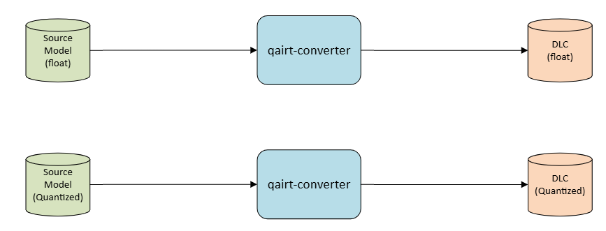
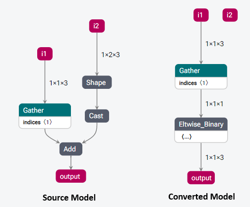
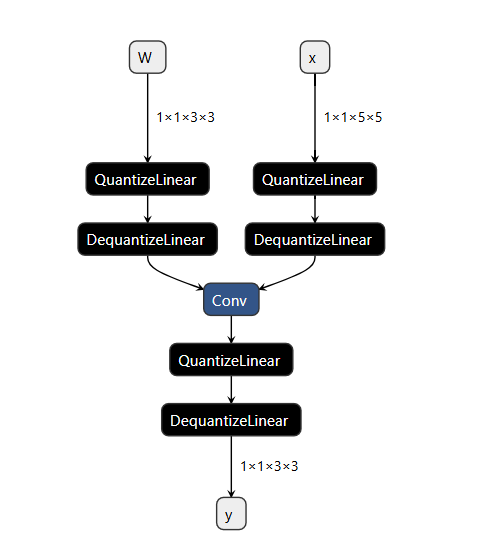
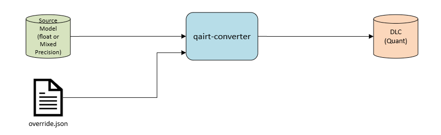
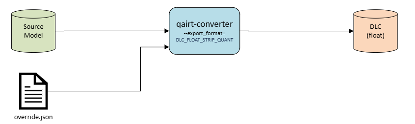
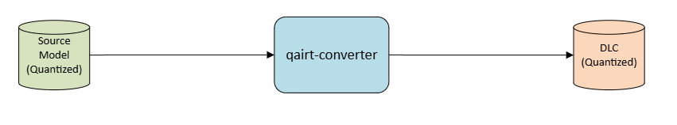
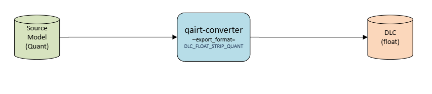
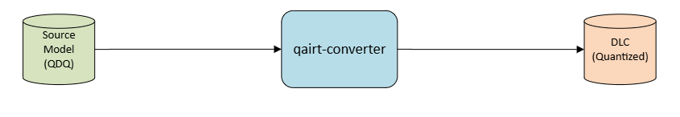

Qairt Converter¶
The qairt-converter tool converts a model from one of ONNX/TensorFlow/TFLite/PyTorch framework to a DLC.
The DLC contains the model in a Qualcomm graph format to support inference on Qualcomm’s AI accelerator cores.
A new prefix qairt for Qualcomm AI Runtime signifies that this converter can be used with both the Qualcomm Neural Processing SDK API as well as the Qualcomm AI Engine Direct
API. The converter automatically detects the proper framework based on the source model extension.
Supported frameworks and file types are:
Framework |
File Type |
|---|---|
Onnx |
*.onnx |
TensorFlow |
*.pb |
TFLite |
*.tflite |
PyTorch |
*.pt |
Basic Conversion¶
Basic conversion has only one required argument --input_network, which is the path to the source framework model.
The source model can either be float model or quantized model, qairt-converter will convert it to corresponding DLC, retaining the precision and datatype of the tensors.
Some frameworks may require additional arguments that are otherwise listed as optional. Please check the help text at general/tools:qairt-converter for more details.

Onnx Conversion
Current ONNX Conversion supports upto ONNX Opset 24.
$ qairt-converter --input_network model.onnx
Tensorflow Conversion
Tensorflow additionally requires --source_model_input_shape and --out_tensor_node arguments.
--source_model_input_shape is for specifying the list of all the input names and dimensions to the network model.
--out_tensor_node is for specifying the network model’s output tensor name/s.
$ qairt-converter \ --input_network inception_v3_2016_08_28_frozen.pb \ --source_model_input_shape input 1,299,299,3 \ --out_tensor_node InceptionV3/Predictions/Reshape_1
In the above example, the model inception_v3_2016_08_28_frozen.pb has input named input with dimensions (1,299,299,3), and output tensor with
name InceptionV3/Predictions/Reshape_1.
Input/Output Layouts¶
The default input and output layouts in the converted graph are the same as per the source model. This behavior differs from the legacy converter which would modify the input and (optionally) the output layout to the spatial first format. An example single layer Onnx model (spatial last) is shown below.

Input/Output Customization using YAML¶
Note
This feature allows user to specify their desired input/output tensor layout for the converted model.
Users can provide a YAML configuration file to simplify using different input and output configurations using the --config command-line option.
All configurations in the YAML are optional. If an option is provided in the YAML configuration and an equivalent
option is provided on the command line, the command line option takes precedence over the one provided in the configuration file.
The YAML configuration schema is shown below.
Name:Name of the input or output tensor present in the model that needs to be customizedSrc Model ParametersThese are mandatory if a certain equivalent desired configuration is specified.
DataType:Data type of the tensor in source model.Layout:Tensor layout in the source model. Valid values are:NCDHW
NDHWC
NCHW
NHWC
NFC
NCF
NTF
TNF
NF
NC
F
where
N = Batch
C = Channels
D = Depth
H = Height
W = Width
F = Feature
T = Time
Desired Model ParametersDataType:Desired data type of the tensor in the converted model. Valid values are float32, float16, uint8, int8 datatypes.Layout:Desired tensor layout of the converted model. Same valid values as source layout.Shape:Tensor shape/dimension in the converted model. Valid values are comma separated dimension values, i.e., (a,b,c,d).Color Conversion:Tensor color encoding in the converted model. Valid values are BGR, RGB, RGBA, ARGB32, NV21, and NV12.QuantParams:Required when the desired model data type is a quantized data type. Has two subfields: Scale and Offset.Scale:Scale of the buffer as a float value.Offset:Offset value as an integer.
Optional:During calls to graph execute, the client can use optional I/O tensors to signal to the backend which tensors to be optionally provided/produced. Valid values are True, False.
The --dump_config_template option of qairt-converter saves the IO configuration file for the user to update.
Pass the --dump_config_template option to the qairt-converter to save the IO configuration file at the specified location.

$ qairt-converter \ --input_network model.onnx \ --dump_config_template <output_folder>/io_config.yaml
This is the sample output of the dumped IO configuration file:
Converted Graph: - Input Tensors: - Output Tensors: Input Tensor Configuration: # Input 1 - Name: 'input' Src Model Parameters: DataType: Layout: Shape: Desired Model Parameters: DataType: Layout: Color Conversion: QuantParams: Scale: Offset: Output Tensor Configuration: # Output 1 - Name: 'output' Src Model Parameters: DataType: Layout: Desired Model Parameters: DataType: Layout: QuantParams: Scale: Offset:
Consider a model with the Source model I/O and Desired model I/O configuration as shown in the table below:
Input/Output Name
Source Model I/O
Desired Model I/O
Datatype / Layout
Datatype / Layout
‘input_0’
float32 / NCHW
uint8 / NHWC
‘output_0’
float32 / NCHW
uint8 / NHWC
Here is an example io_config.yaml, where:
Input and output tensor layouts are converted from NCHW format in source model to NHWC format in the converted model.
Also, the datatypes are converted from float32 format in source model to uint8 format in the converted model.
Converted Graph: - Output Tensors: ['output'] Input Tensor Configuration: # Input 1 - Name: 'input' Src Model Parameters: DataType: float32 Layout: NCHW Shape: Desired Model Parameters: DataType: uint8 Layout: NHWC Color Conversion: QuantParams: Scale: Offset: Output Tensor Configuration: # Output 1 - Name: 'output' Src Model Parameters: DataType: float32 Layout: NCHW Desired Model Parameters: DataType: uint8 Layout: NHWC QuantParams: Scale: Offset:$ qairt-converter \ --input_network model.onnx \ --config io_config.yaml
Disconnected Input Preservation¶
In deep learning framework models, computational graphs often contain multiple inputs. During graph optimization,
unused inputs may be removed through techniques like constant folding or dead code elimination. While this improves
performance and reduces memory usage, it can sometimes interfere with workflows that rely on the presence of all
inputs being present in the source framework model — especially in scenarios involving inference.
To address this, qairt-converter retains all the source framework model inputs, ensuring that all graph inputs remain
part of the graph regardless of their usage. This behavior is similar to the other open-source inference engines.
Unused graph input nodes can be removed by using --remove_unused_inputs command line argument while using
qairt-converter.
- Retaining unused or disconnected inputs provides the following benefits:
Avoid unintended side effects during model conversion.
Facilitate debugging and analysis by retaining all original inputs.
The following figure shows a source graph (left) with two inputs i1 and i2. The input i2 is disconnected post conversion, but it is preserved in the converter graph.

QAT encodings¶
QAT encodings are quantization-aware training encodings which are present in the source network model. They can be present in the following form in the source network model.
FakeQuant Nodes: There can be FakeQuant nodes in the source network model. This nodes simulate the quantize-dequantize operations and use parameters like scale and zero-points to map the floating point values to quantized values and back. During conversion this nodes will be removed and corresponding encodings are applied to generate a quantized or mixed precision DLC output.

Quantization overrides: Tensor output encodings can be associated with the output tensors in the source network model via overrides. The quantization overrides for the tensors(output, weights, bias, activations) in the source network model can be provided to the
qairt-converterwith a JSON file using the--quantization_overridescommand-line option. When the overrides option is specified,qairt-converterproduces a fully quantized or mixed precision graph depending on the overrides by applying encoding overrides, propagate encodings across data invariant Ops and fallback the missing tensors in float datatype.Quant-Dequant Nodes: There can be Quant-Dequant(QDQ) nodes present in the source network model. The Quant nodes convert floating-point values to lower precision values typically integers to reduce model’s memory footprint and improving inference time. The Dequant do the opposite and convert from lower precision values to floating-point values for getting higher precision for certain operations. During conversion this nodes will be removed and corresponding encodings are applied to generate a quantized or mixed precision DLC output.

Note
Inference fails for CPU and DSP runtimes if QAT encodings contain 16-bit.
Float model Usecases¶
Float bitwidth conversions
Users can convert float source model between float bitwidth 16 and 32 using the
--float_bitwidthflag to theqairt-convertertool.
For converting a source model with all float32 tensors to float16 tensor use
--float_bitwidth 16.Note
Float bitwidth 32 is the default bitwidth for float source model conversion.
Float bitwidth 16 is the default bitwidth for source model with quantization encodings or overrides
$ qairt-converter --input_network model.onnx \ --float_bitwidth 16For converting a source model with all float16 tensors to float32 tensor use
--float_bitwidth 32.$ qairt-converter --input_network model.onnx \ --float_bitwidth 32Float16 Conversion with Float32 bias
To generate a float16 graph with the bias still in float32, an additional
--float_bias_bitwidth 32flag can be passed.$ qairt-converter --input_network model.onnx \ --float_bitwidth 16 \ --float_bias_bitwidth 32
Quantization overrides Usecases¶
Float mixed precision conversion
User can provide overrides to
qairt-converterto floating point source model to a mixed float precision (float16 and float32) model. For example, if the source model has all tensors with float32 precision and user wants to change precision of some tensors to float16, override file should contain names of the tensor with type as float16. $ qairt-converter \ --input_network model.onnx \ --quantization_overrides <path to json>/overrides.json
$ qairt-converter \ --input_network model.onnx \ --quantization_overrides <path to json>/overrides.jsonQuant conversion
User can also convert a float source model or mixed precision source model to a quantized model using quantization overrides. The
qairt-converterwill generate a fully quantized or mixed precision graph based on the overrides provided.
$ qairt-converter \ --input_network model.onnx \ --quantization_overrides <path to json>/overrides.jsonOverrides to Float conversion
User can convert a source model with overrides to float to run on floating point runtimes i.e. QNN-GPU and QNN-CPU using the command-line option
--export_format=DLC_STRIP_QUANT.Note
This might result in loss of accuracy.

$ qairt-converter \ --input_network model.onnx \ --quantization_overrides <path to json>/overrides.json \ --export_format=DLC_STRIP_QUANT
Quantized model Usecases¶
Quant model conversion
User can now convert a quantized model in a single step using the
qairt-converterwithout any additional steps.
$ qairt-converter \ --input_network quant_model.onnxQuant to Float conversion
User can convert a quantized source model to float to run on floating point runtimes i.e. QNN-GPU and QNN-CPU using the command-line option
--export_format=DLC_STRIP_QUANT.Note
This might result in loss of accuracy.

$ qairt-converter --input_network quant_model.onnx \ --export_format=DLC_STRIP_QUANT
Quant-Dequant(QDQ) model Usecases¶
QDQ model conversion
User can now convert a Quant-Dequant source model to quantized model in a single step using the
qairt-converterwithout any additional steps.
$ qairt-converter \ --input_network quant_dequant_model.onnxQDQ to Float conversion
User can convert a Quant-Dequant source model to float to run on floating point runtimes i.e. QNN-GPU and QNN-CPU using the command-line option
--export_format=DLC_STRIP_QUANT.
Note
This might result in loss of accuracy.
$ qairt-converter --input_network model.onnx \ --export_format=DLC_STRIP_QUANT
DryRun¶
Use the --dry_run option to evaluate the model without actually converting any ops. This returns unsupported ops/attributes
and unused inputs/outputs.
FAQs¶
How is QAIRT Converter different from Legacy Converters?
Single converter vs independent framework converters
The qairt-converter is a single converter tool supporting conversion for all supported frameworks based on the model extension while legacy converters had different framework specific tools.
Changed some optional arguments as default behavior
The default input and output layouts in the Converted graph will be same as in the Source graph. The legacy ONNX and Pytorch converters may not always retain the input and output layouts from Source graph.
Removed deprecated arguments
Deprecated arguments on the legacy converters are not enabled on the new converter.
Renamed some arguments for clarity
The –input_encoding argument is renamed to –input_color_encoding. Framework-specific arguments have the framework name present. eg- –define_symbol is renamed to –onnx_define_symbol, –show_unconsumed_nodes is renamed to –tf_show_unconsumed_nodes, –signature_name is renamed to –tflite_signature_name.
DLC as the Converter output file format
The QAIRT Converter uses DLC as output format. The .cpp/.bin & .json format used by
qnn-<framework>-converterConverter are not supported by QAIRT Converter. In order to generate the .cpp/.bin and .json output, continue to use the legacy converter.HTP as Default Backend in QAIRT vs Legacy Converters
HTP is set as the default backend in the QAIRT converter, which may enable certain HTP-specific behaviors that wouldn’t be triggered by default in legacy converters where the backend is left empty. This difference can affect how some backend-dependent features behave during conversion/quantization.
For example, during quantization, an optimization called
IntBiasUpdatesis applied to the FullyConnected op if the backend is set toHTPin SNPE, whereas it is always applied in QAIRT.
Quantizer functionality is separated from Conversion functionality
qnn-<framework>-converterinvokes the quantizer as part of the converter tool when--input_listor--float_fallbackis passed.qairt-quantizerhowever is a standalone tool for quantization likesnpe-dlc-quant.Please refer to qairt-quantizer for more information and usage details.
QAIRT Converter preserves the original output order from ONNX models, while legacy converters may reorder outputs.
To maintain output order in the legacy converter (
qnn-onnx-converter), use the--preserve_onnx_output_orderflag.Will the Converted model be any different with QAIRT converter compared to Legacy Converter?
The result of the QAIRT Converter will be different from the result of Legacy Converters in terms of the input/output layout.
Legacy converters will by default modify the input tensors to Spatial First (e.g. NHWC) layout. This means for Frameworks like ONNX, where the predominant layout is Spatial Last (e.g. NCHW), the input/output layout is different between the source model and the converted model.
Since QAIRT Converter preserves the source layouts be default, the QAIRT-converted graphs in case of many ONNX/Pytorch models will be different from the Legacy-converted graphs.
QAIRT Converter preserves the original output order from ONNX models.